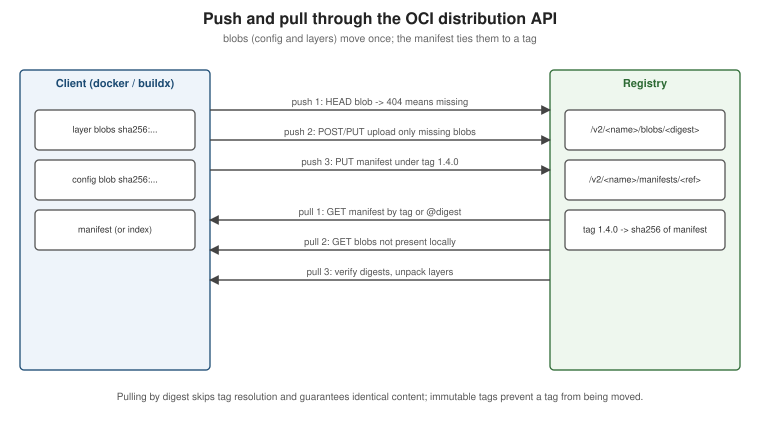

Registries and Docker Hub
|
This content was generated with the assistance of AI and should be verified against the official documentation before being relied on in production. |
A registry is where images live between docker build and docker run. Learning Docker (chapters 4 and 5)
covers Docker Hub and the Python docker-registry of 2015; since then registries have been standardised by the
OCI distribution specification, Docker Hub has added access tokens, immutable tags and pull limits, and every
cloud provider runs an OCI registry. This page describes that landscape for Docker Engine 29.8.x and Buildx 0.37.x.
How a registry works
A registry is an HTTP API (the OCI distribution specification, derived from Docker’s Registry HTTP API V2) that stores two kinds of objects per repository:
-
blobs — layers and image configurations, addressed by digest (
sha256:…) and uploaded once; -
manifests (and image indexes) — small JSON documents listing blobs, addressed by digest and optionally by one or more tags.

A push checks which blobs the registry already has (HEAD /v2/<name>/blobs/<digest>), uploads the missing ones,
then `PUT`s the manifest under a tag. A pull `GET`s the manifest by tag or digest, then downloads only the blobs
that are not already local. Pulling by digest skips the tag lookup and verifies content, which is why it is the
reproducible choice (see Images, Layers and Tags). Derived from
the OCI distribution specification.
Docker Hub
Docker Hub (docker.io) is the default registry for every unqualified image name.
-
Repositories are
<namespace>/<name>: your user or organisation namespace, orlibrary/for Docker Official Images. -
Docker Official Images (
nginx,postgres,eclipse-temurin) are curated, rebuilt for security fixes and documented; Verified Publisher images come from commercial vendors; both are "trusted content". -
Immutable tags can be enabled per repository so a pushed tag can never be overwritten.
-
Access tokens replace passwords for the CLI and CI: personal access tokens (scoped read, read/write or read/write/delete) and organisation access tokens. Docker Hub also accepts OIDC connections from CI providers.
docker login -u myuser # prompts; paste a personal access token, not the account password
echo "$DOCKERHUB_TOKEN" | docker login -u myuser --password-stdin # non-interactive, e.g. CI
docker tag orders-service:1.4.0 myuser/orders-service:1.4.0
docker push myuser/orders-service:1.4.0
docker logoutDerived from Docker Hub quickstart,
Repositories and
Access tokens. Credentials are stored in the OS keychain through a
credential helper when one is configured, otherwise base64-encoded in ~/.docker/config.json.
Pull limits, and staying under them in CI
Docker Hub limits pulls per 6 hours: 100 for unauthenticated clients (per IPv4 address or IPv6 /64), 200 for authenticated Personal accounts, unlimited for Pro, Team and Business. Shared CI runners hit the unauthenticated limit quickly because many jobs share an address. The remedies:
to Docker Hub?"} auth -->|No| lim["Shared IP limit
100 pulls per 6 h"] auth -->|Yes| q{"Registry mirror or
pull-through cache?"} q -->|Yes| mirror["Mirror / cache
(Distribution proxy, Artifactory, ECR pull-through)"] q -->|No| hub["Docker Hub with the
account's allowance"] mirror -->|cache miss only| hub mirror --> ok["Image served from cache"] hub --> ok
-
Authenticate every pull with an access token (
docker/login-actionin GitHub Actions). -
Use a mirror or pull-through cache (
"registry-mirrors"indaemon.jsonfor Docker Hub, or a cloud registry’s pull-through cache). -
Mirror the few images you use into GHCR or your cloud registry and reference them there.
Derived from Docker Hub pull usage and limits and Mirror the Docker Hub library. The Testcontainers side of this, including image-name substitution, is on Spring Boot Integration Tests with Testcontainers.
Pushing images
# Single platform: build, tag, push
docker build -t ghcr.io/myorg/orders-service:1.4.0 .
docker push ghcr.io/myorg/orders-service:1.4.0
# Multi-platform: build and push the image index in one step
docker buildx build --platform linux/amd64,linux/arm64 \
-t ghcr.io/myorg/orders-service:1.4.0 -t ghcr.io/myorg/orders-service:1.4 --push .
# Copy an image (all platforms, attestations) between registries without pulling it locally
docker buildx imagetools create -t registry.example.com/mirror/orders-service:1.4.0 ghcr.io/myorg/orders-service:1.4.0Derived from docker image push,
Multi-platform builds and
docker buildx imagetools create.
Other registries
| Registry | Address | Authentication from CI |
|---|---|---|
GitHub Container Registry |
|
|
Amazon ECR |
|
OIDC role via |
Google Artifact Registry |
|
Workload Identity Federation (OIDC) via |
Azure Container Registry |
|
Federated credentials (OIDC) via |
All of them speak the OCI distribution API, so docker push/pull work unchanged once logged in; prefer keyless
OIDC over long-lived passwords. GitHub’s own guide is
Working
with the Container registry; the login action’s README documents each provider
(docker/login-action). For Azure Container Registry specifically — SKUs,
az acr create/az acr build, ACR Tasks, geo-replication and managed-identity pulls from AKS, Container Apps or App
Service — see Azure Container Registry.
For Amazon ECR in depth, see Container Registry.
For Artifact Registry and Cloud Build on Google Cloud, see
Container Registry and Builds.
A private registry with CNCF Distribution
The registry Docker open-sourced became CNCF Distribution and ships as
the registry image. A minimal authenticated registry with TLS:
mkdir -p auth certs
docker run --rm --entrypoint htpasswd httpd:2.4 -Bbn ci-user "$REGISTRY_PASSWORD" > auth/htpasswd
# certs/registry.crt and certs/registry.key issued for registry.example.com
docker run -d --name registry --restart always -p 443:5000 \
-v "$(pwd)/auth":/auth -v "$(pwd)/certs":/certs -v registry-data:/var/lib/registry \
-e REGISTRY_AUTH=htpasswd -e REGISTRY_AUTH_HTPASSWD_REALM=registry-realm \
-e REGISTRY_AUTH_HTPASSWD_PATH=/auth/htpasswd \
-e REGISTRY_HTTP_TLS_CERTIFICATE=/certs/registry.crt -e REGISTRY_HTTP_TLS_KEY=/certs/registry.key \
registry:3
docker login registry.example.comTo run it as a pull-through cache for Docker Hub instead, set REGISTRY_PROXY_REMOTEURL=https://registry-1.docker.io
(plus credentials for authenticated upstream pulls) and point the daemon’s "registry-mirrors" at it. Derived from
the Distribution deployment guide and
Registry as a pull through cache.
OCI artifacts and webhooks
Because the distribution API stores arbitrary manifests and blobs, registries also hold OCI artifacts that are not
container images: Helm charts, SBOMs and signatures, Compose applications (docker compose publish, see
Compose in Practice) and AI models. Docker Hub webhooks notify a URL
when an image is pushed to a repository, which can trigger a deployment. Derived from
OCI artifacts on Docker Hub and
Webhooks.
Superseded: automated builds and the Python registry
-
Docker Hub automated builds (build on every Git push, Learning Docker chapter 4) are a legacy feature, deprecated and scheduled for removal on 1 April 2027. Build in CI instead — see Docker CI/CD with GitHub Actions and Docker’s migration guide.
-
The Python
docker-registryof Learning Docker chapter 5 implemented the long-retired v1 protocol. Its replacement is CNCF Distribution and the OCI distribution API, as above.